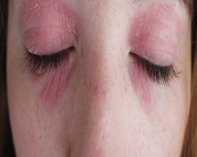

မ်က္ ခြံ ေျခာက္ ေသြ႕ျခင္း

၁။ ရွား ေစာင္း လတ္ ပတ္ ကို မ်က္ ခြံ ေပၚတင္ ျခင္း က မ်က္ ခြံ ေျခာက္ ေသြ႕ျခင္းကို ေလ်ာ့ခ်ႏိုင္ ပါတယ္။
၂။ မ်က္ ခြံ ေပၚကို ခပ္ ေႏြး ေႏြး ေရစြတ္ ထားတဲ့ အဝတ္ စကို ၁၀-၁၅ မိနစ္ ခန္႔ တင္ ထားပါ။
၃။ အျပင္ ထြက္ မယ္ ဆိုရင္ ေနကာမ်က္ မွန္ တပ္ သြားပါ။
၄။ မသန္႔ ရွင္း ေသာလက္ ျဖင့္ မ်က္ လံုးကုိ ထိ ေတြ႕၊ ပြတ္ သတ္ ျခင္း ေရွာင္ ပါ။
၅။ မအိပ္ ခင္ မိတ္ ကပ္ မ်ားကုိ ဖ်က္ ျပီး အသားအ ေရႏွင့္ လုိက္ ဖက္ မည့္ အစိုဓာတ္ ထိန္း ညွိခရင္ လိမ္း အိပ္ ပါ။ ေခါင္း အံုး၊ ခြေခါင္း အံုးတို႔ကို သန္႔ ရွင္း စြာထားပါ။